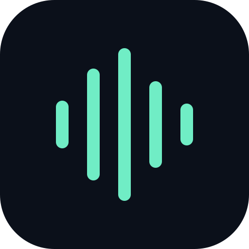

Audio LabiOS / PWA EXPERIMENTLISTEN TO WHAT YOUR BROWSER CAN DO
Microphone in.
A little space out.
Live audio, a room reverb, and a closer look at the channels your iPhone actually delivers.
Live session
ReadyConnect earphones before starting. Begin at low volume; speaker playback can cause feedback. Audio stays on this device.
What comes in?
BEFORE THE EFFECTStart a session to inspect the microphone signal.
- Track reports
- —
- Audio thread receives
- —
- L/R correlation
- —
- L/R difference
- —
Move a sound around the phone and compare L/R. Two different channels indicate a stereo stream, but cannot prove access to two particular physical microphones. Mono is duplicated only after these measurements.
How fast does it run?
NO ENGINE RUNNING- Audio sample rate
- —
- Render quantum
- —
- Added DSP buffer
- —
- GPU compute + readback
- —
- Output base latency
- —
- Output device latency
- —
- GPU missed quanta
- 0
- Late / skipped GPU blocks
- 0 / 0
Latency values are partial reports, not measured microphone-to-ear delay. Bluetooth, microphone capture and OS routing add latency. GPU timings include submission and CPU readback, not just shader execution. Wired / USB earphones are the best baseline.
Output follows the system audio route. Select your earphones in iOS Control Center; this app cannot verify the active output device.
Try these three experiments
- Check stereo. Select the built-in microphone if exposed. Try “Require exactly 2 channels”, then move a sound from left to right.
- Hear the effect. Speak or tap softly. Move reverb from 0% (dry) toward 100%. Compare wired earphones with Bluetooth.
- Compare engines. Stop, switch to WebGPU, then start again. Compare buffering and missed deadlines. A small reverb can be faster on the CPU.
Install on iPhone: Safari → Share → Add to Home Screen. The app shell works offline after the first visit. Screen locking, app switching and calls may interrupt capture; hidden sessions stop automatically.
Technical report & troubleshooting
If you hear nothing, check microphone permission, input levels, the iOS output route and Output level. Bluetooth microphone capture can trigger a lower quality headset route. Try a wired / USB headset or the built-in microphone.
Checking browser capabilities…